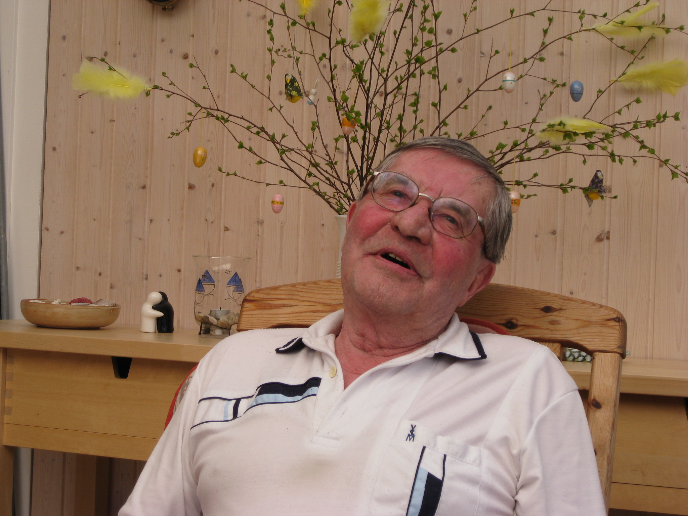
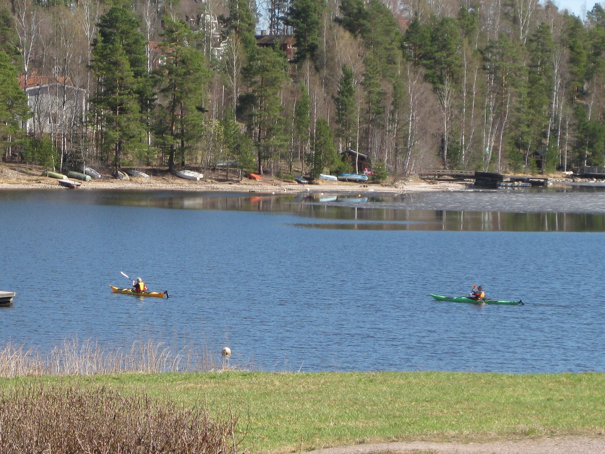
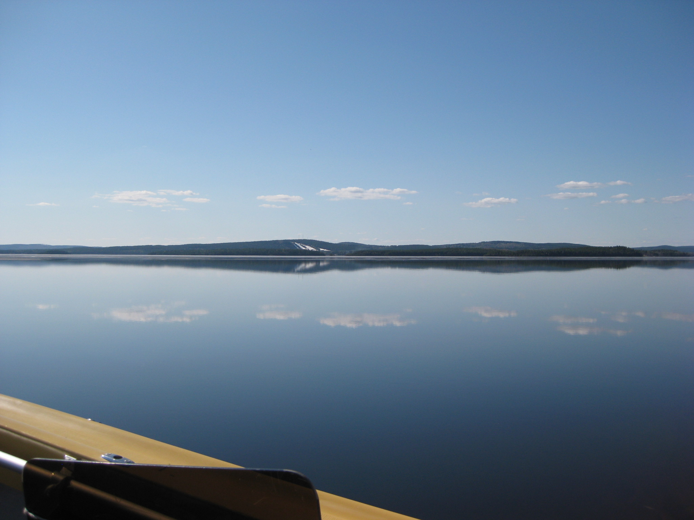
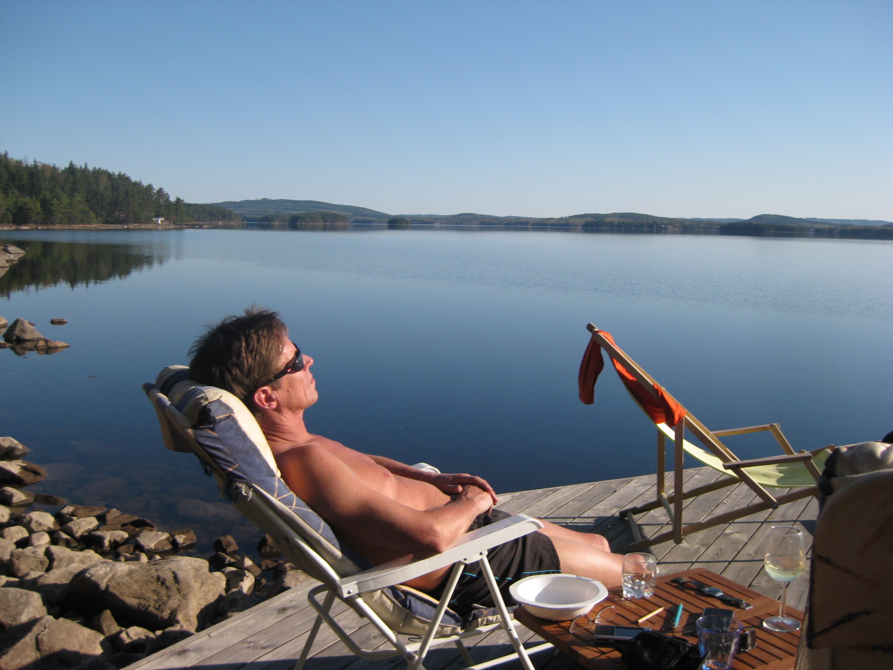
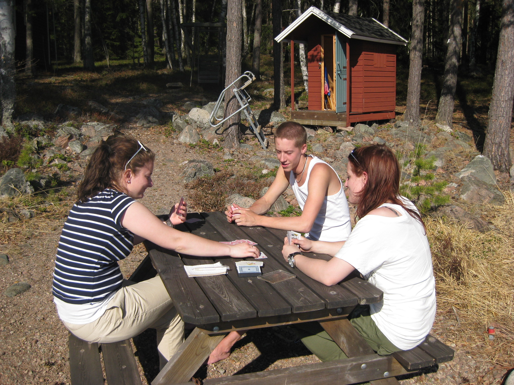
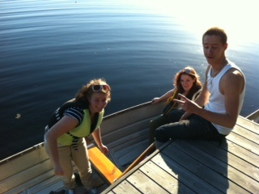
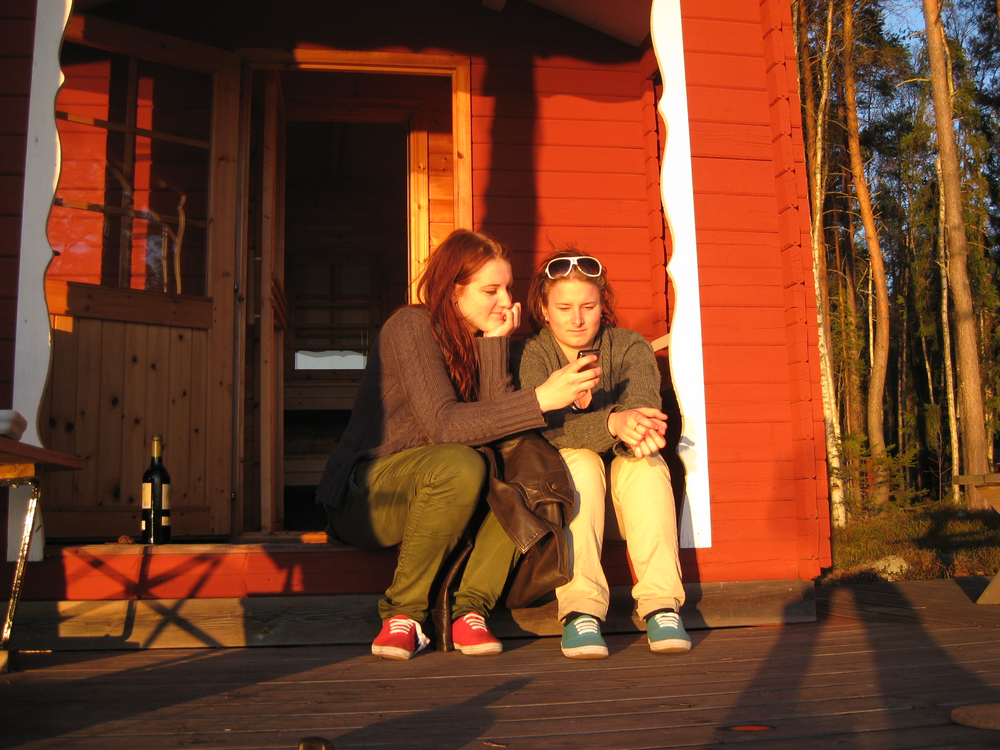
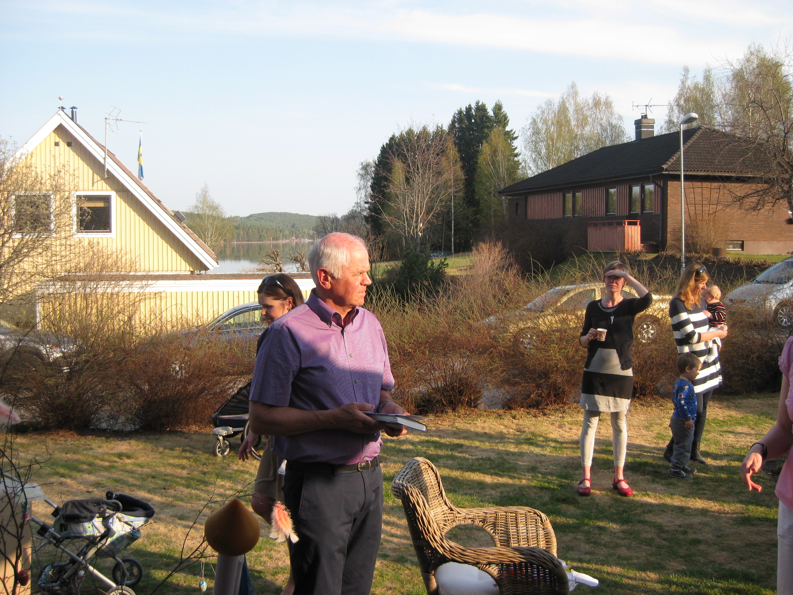

En vacker påskhelg med vårvärme över hela Sverige — sådant väder gör gott för folkhälsan. Helgen började hemma, fortsatte på Granö och avslutades med grannens 70-årsfirande.
Flera saknades dock: sonen Tobbe, Johans flickvän Nadja, farbröderna Mats och Hans samt hunden Totte. En magisk helg vid Runn ändå.







